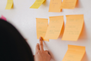
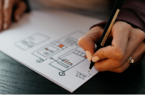

User Research

The initial step in projects have always been enjoyable because I enjoy gather and analyzing data. Some of the tools I use are Personas, Affinity Diagrams, User Surveys and Empathy Maps.
Design & Prototyping

To make sure the wireframes and prototypes are not soley based on a nice design, myself or with a team create User Scenerios and Journeys to guide our creative process using tools such as, Miro, Xtensio, Invsion and Adobe XD.
Front-End Development

Although I have just begun learning about the development side of design, I am very excited to continue learning and expanding my skills. So far I have been able to gain experience using HTML5 CSS3, JavaScript & Bootstrap 4 with Github and Visual Studio Code.